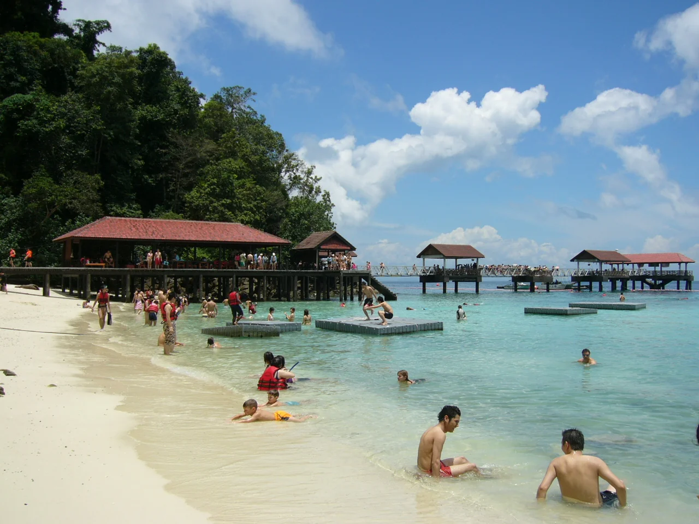

Parc marin de Pulau Payar — Langkawi
Kedah, Malaisie · snorkeling, plongée

Parc marin autour de l’île de Payar, à 35 km au sud de Langkawi, accessible uniquement par la mer. Wikipédia décrit des eaux abritées, idéales pour le snorkeling, la plongée et la baignade, et un site de plongée, le « Coral Garden », couvert de coraux mous multicolores. Selon le Routard, on croise souvent de jeunes requins à pointe noire près des pontons, dans les eaux peu profondes.
- Lieu
- Kedah, Malaisie
- Niveau
- Variable selon les conditions
- Activités
- snorkeling, plongée
- Type d'eau
- Mer / océan
- Coordonnées
- 6.06, 100.04 (position approximative du secteur)
Dangers à connaître
- Le parc est fermé aux visiteurs les mardis et mercredis, et chaque année de début mars à fin mai (Routard).
- Le nombre de visiteurs est limité chaque semaine : renseigne-toi auprès des opérateurs agréés (Routard).
- Les coraux ont blanchi en 2010 et 2016 : des zones touchées ont été fermées pour les laisser se refaire (Wikipédia, Routard).
Le conseil d'Ocean Buddy
Passe par un opérateur agréé : le parc n’autorise que ceux qui sont enregistrés. Les bateaux partent de Kuah et la traversée dure environ une heure (Routard).
Ouvrir dans Ocean Buddy Télécharger sur l'App Store
Source : Fiche Ocean Buddy · décembre 2026 · d’après le Routard et Wikipédia · à vérifier localement.